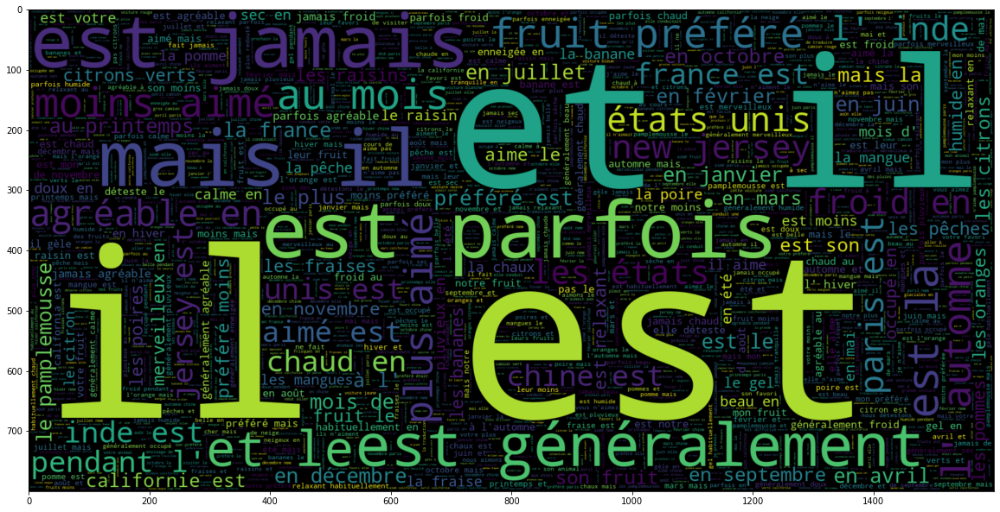

English to French Translator

The project is a English to French Translator, created using RNNs (Recurrent Neural Networks).
Motivation behind this project is to dive deeper into the domain of Natural Language Processing (NLP).
The AI model that I built follows a Seq2Seq Archiecture, yielding an accuracy of around 83%.
The project can be found at my Github repo: Englih_to_French_Translator.
Technologies:
- - Python 3
- - Tensorflow 2
- - Keras
- - NLTK
- - Gensim
- - WordCloud
- - Seaborn
English Vocabulary Visualizations
French Vocabulary Visualizations
